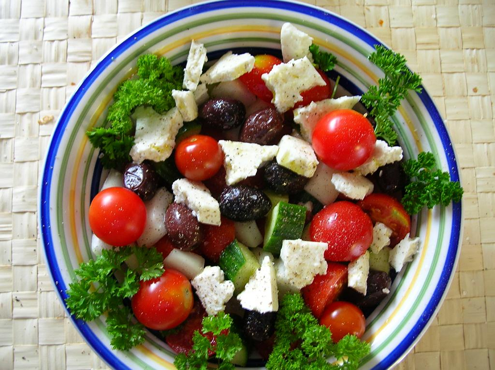

Back to Recipes
Greek Salad

This easy greek salad is light, refreshing, and delicious! Great as a side dish to your favorite meals, or all on its own
as a quick and healthy snack! The best thing about this recipe is it is easily adapatble - add your favorite veggies for more
variety. Not to mention, with minimal cooking and only 15 minutes or preparation, this is an easy reach summer dish when you're
in a rush.
Ingredients
- 1 cucumber, halved lengthwise, thinly sliced into half-moons
- 1/2 red onion, thinly sliced
- 1 pt. grape or cherry tomatoes, halved
- 1 cup halved pitted Kalamata olives
- 6 oz. feta, cut into 1/2" cubes
- 1/4 cup Extra Virgin Olive Oil
- 2 Tbsp. red wine vinegar
- Juice of 1/2 lemon
- 1 tsp. dried oregano
- Salt and fresh cracked Black Pepper to taste
Instructions
- Wash and prep ingredients, chopping to similar sizes
- In a large bowl, toss ingredients and gently fold in the Feta
- In a small bowl, whisk vinegar, lemon juice, and oregano until combined; season with salt and pepper.
Slowly stream in oil, whisking until dressing is smooth and emulsified
- Drizzle dressing over salad and toss again to combine